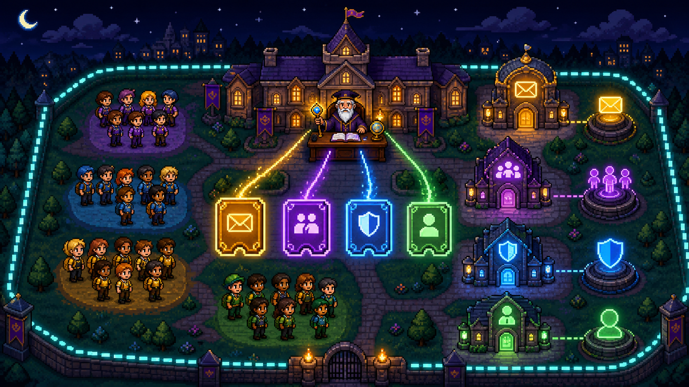
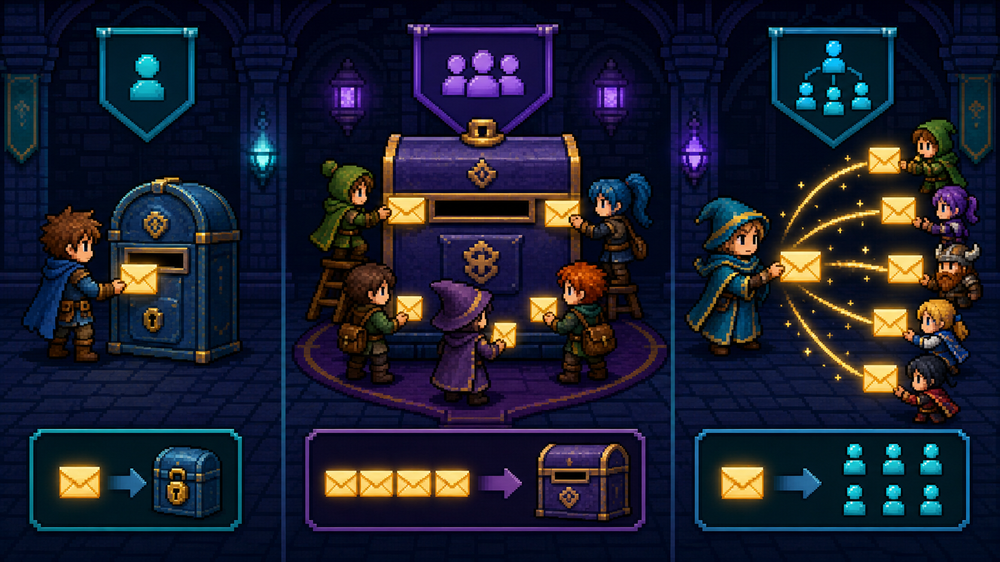
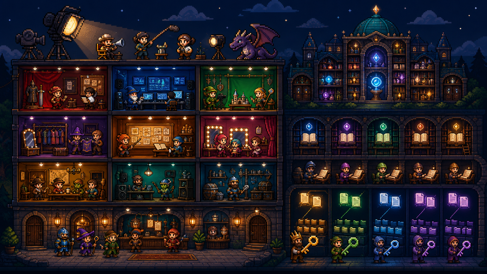
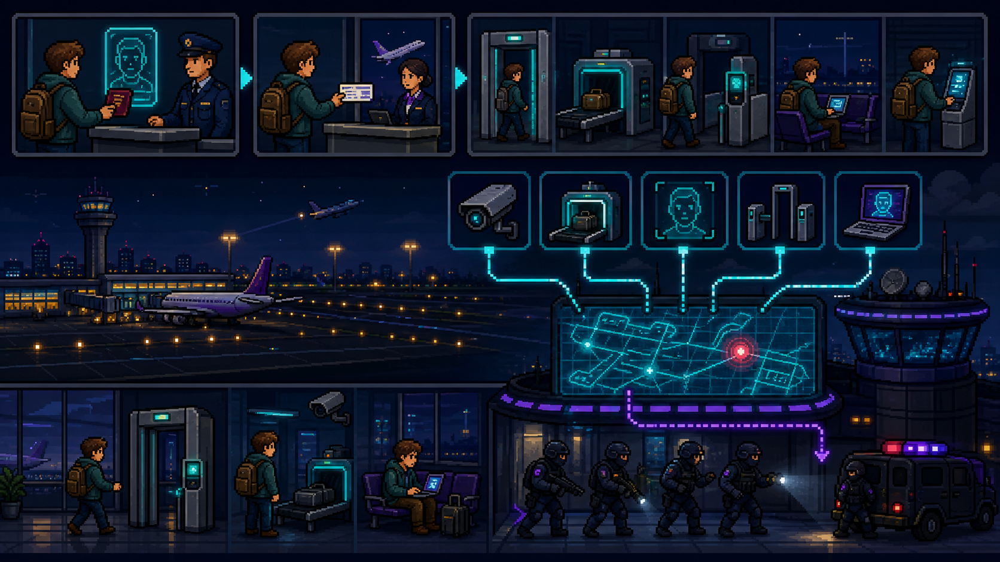
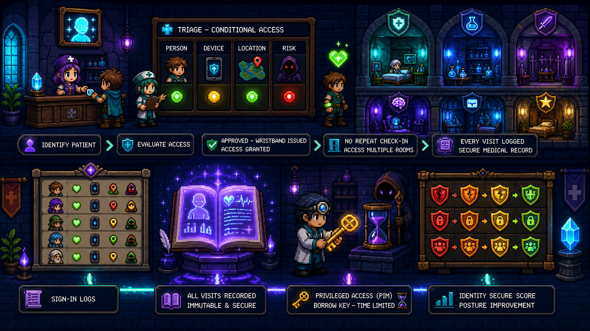
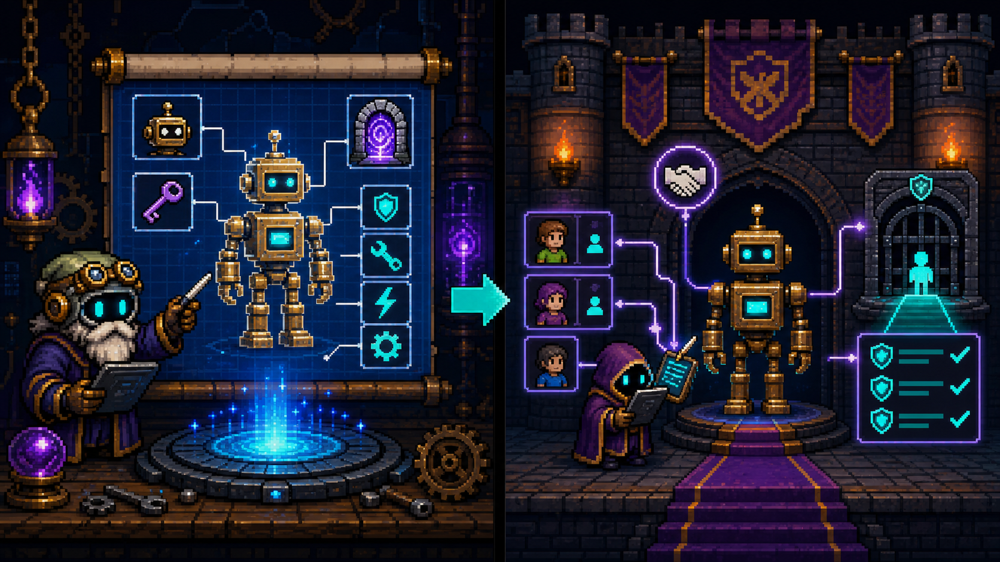

Tenant
Instância da organização com domínios, configurações, usuários, grupos e assinaturas.
Aprenda a escolher o objeto certo, encontrar o centro de administração correto e proteger o acesso sem decorar telas.
Conclua as seis aulas para dominar o primeiro domínio.
Comece pela organização: quem existe, qual licença recebe e onde as configurações globais são gerenciadas.

O tenant é o campus. Usuários e grupos são alunos e turmas. A licença é a matrícula que libera laboratórios específicos. O Microsoft 365 admin center é a reitoria: cadastra pessoas, domínios, licenças e regras da instituição.
Instância da organização com domínios, configurações, usuários, grupos e assinaturas.
Determina quais serviços e recursos um usuário ou grupo pode utilizar.
Visão geral de usuários, cobrança, saúde, domínios e configurações organizacionais.
⚡ SÊNIOR Atribuir uma licença não substitui permissões internas do serviço. Licença habilita a capacidade; funções, políticas e permissões controlam o que a identidade pode fazer.
Associe cada objeto de email ao problema que ele resolve.

Uma mailbox é uma caixa que guarda cartas. Uma shared mailbox é a caixa “suporte@” usada por uma equipe. Um distribution group é o carteiro que copia a mesma carta para uma lista — ele distribui, não guarda.
| Objeto | Use quando... | Ponto-chave |
|---|---|---|
| User mailbox | Uma pessoa precisa enviar e receber email | Associada ao usuário |
| Shared mailbox | Uma equipe atende um endereço comum | Membros acessam a mesma caixa |
| Distribution group | Uma mensagem deve chegar a vários membros | Distribui; não é caixa colaborativa |
⚡ SÊNIOR O Exchange admin center é a ferramenta adequada para objetos e políticas de email. Grupos de distribuição tratam fluxo de mensagens; Microsoft 365 groups também sustentam colaboração entre workloads.
Entenda onde o conteúdo vive e como equipes, canais, sites e bibliotecas se relacionam.

O Team é a produção de um filme; os channels são departamentos como roteiro e efeitos. O SharePoint site é o arquivo do estúdio, a library é uma estante e as folders organizam cada projeto.
⚡ SÊNIOR Teams usa serviços do Microsoft 365 nos bastidores. Arquivos de canais normalmente são armazenados no SharePoint. Use Teams admin center para equipes/canais/políticas e SharePoint admin center para sites, acesso e governança de conteúdo.
Pense em segurança como decisões contínuas, sinais correlacionados e resposta coordenada.

O passaporte prova quem você é (autenticação). O cartão de embarque mostra onde pode ir (autorização). Zero Trust confere os dois em pontos críticos. A central de segurança junta câmera, bagagem e portões para enxergar um único incidente — como o Defender XDR.
Confirma a identidade.
Determina ações e recursos permitidos.
Correlaciona sinais, alertas e incidentes entre domínios de segurança.
⚡ SÊNIOR Threat intelligence adiciona contexto sobre atores, indicadores e infraestrutura. Threat protection aplica prevenção, detecção, investigação e resposta. Defender XDR reúne sinais para reduzir alertas isolados.
Use sinais para decidir acesso, logs para explicar falhas e PIM para limitar poder administrativo.

A recepção identifica o paciente (Entra ID), a triagem avalia sinais (Conditional Access), a pulseira permite circular sem novo cadastro (SSO), o prontuário registra tudo (logs) e a chave da sala restrita é emprestada ao médico apenas durante a emergência (PIM).
Mostram resultado, políticas aplicadas, localização, dispositivo e detalhes da entrada.
Recomenda melhorias na postura de identidade; não é certificação.
Ativação elegível e just-in-time de funções privilegiadas.
⚡ SÊNIOR Para uma falha de entrada, revise sign-in logs, resultado de MFA, políticas de Acesso Condicional e detecções de risco. Audit logs respondem quem alterou o quê; sign-in logs explicam autenticações.
Separe a definição global de um aplicativo da instância usada dentro do tenant.

A app registration é o projeto de fábrica do robô: identidade, credenciais e permissões solicitadas. A enterprise application é o robô já instalado na sua empresa: recebe usuários, grupos, consentimento e políticas locais.
Application object: definição do aplicativo, IDs, redirect URIs, credenciais e permissões de API.
Service principal: representação local no tenant, atribuições, SSO, consentimento e Acesso Condicional.
⚡ SÊNIOR Usuários e grupos são objetos de segurança usados para atribuir acesso. Aplicativos também precisam de identidade. O service principal permite que o tenant controle como aquela aplicação opera localmente.
Escolha a ferramenta certa para cada cenário. Decidir fixa mais do que reler.